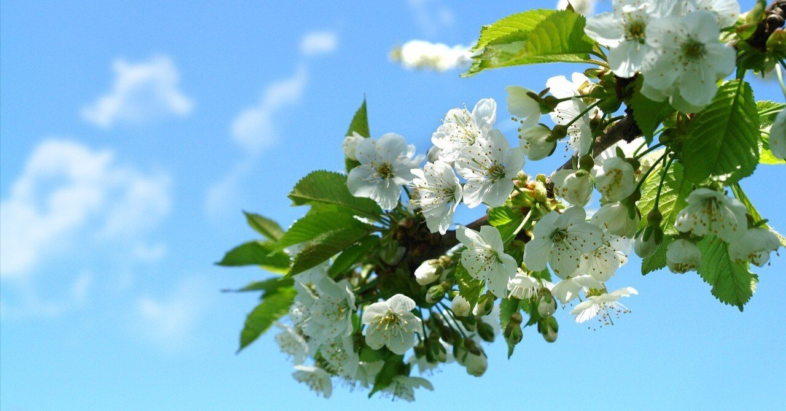

小さな感動を文章にしたい。そして、それを誰かに伝えたい。
独りでに文章を書き始めたのは、確かそんなような理由だった。
日々生きていて、仕事をし、家事をし、替えのない人と出会う間にも、掌からこぼれ落ちていく。
それはきっと、取るに足らない些細な感動。それでも僕は、その“感動”たちをなるたけ掬い上げてnoteに書き連ねてきた。
2024年。今年感動したもののひとつ。今日はそのことについて書いてみたい。
僕の最も敬愛する著名人のひとり、星野源が7年ぶりに上梓したエッセイ集『いのちの車窓から2』。
本作では、2017年から2024年まで『ダ・ヴィンチ』にて連載された源さんの文章が、その時々の熱を帯びながらしたためられている。
多忙を極めた2017年、海外活動が本格化した2019年、コロナ禍で内省的にならざるを得なかった2020年、そして家庭を築いた2021年。時期によって異なる瞬間瞬間でも、そのどれもに源さん節が炸裂している。そのすべてが温かくて、クレバーで、無邪気。だから、僕はその文章から目を離すことができないのだ。
その中でも、とりわけ目を惹いたのが｢喜劇｣と題されたエッセイ。
2022年4月にリリースされた楽曲『喜劇』の創作秘話について書かれている。『いのちの車窓から2』が刊行されるにあたり、特別に書き下ろされた文章だ。
源さんがこれまで発表してきた楽曲の中でも、『喜劇』には特別な思い入れがある。
あの頃は忙しすぎる仕事で思い悩み、何もかもうまくいっていない時期だった。一生懸命取り組んでも、「結果が出ていない」「会社に還元しろ」そうした言葉ばかりを毎日のように喰らっていた。
真面目に仕事をしろ。人生をちゃんと生きろ。
「しばらく休みたい」。そんな言葉をぐっと押し殺しても、上司から相変わらずナイフのような言葉を投げられるたび、今の真剣さではまだまだ足りないんだと、どんどん自分を追い詰めた。
そして、ある日、僕は誰の人生を生きているのかわからなくなった。
でも、ふとこの楽曲を耳にした時、「君が自分を取り戻す方法は、君しか知らないんだよ」と言われたような気分になった。
劣ってると 言われ育った
このいかれた星で
普通のふりをして 気づいた
誰がきめつけた
私の光はただ此処にあった
僕は僕でいい。それは周りにいてくれる大切な人たちが証明してくれている。
『喜劇』と出会って以降、僕はほんの少し日常で自信を身につけることができた。真剣に生きているつもりでも、傍から見れば“ふざけた生活”。ならいっそ、僕はそれを本気で続けていけばいいだけなんだと。
「お、綺麗なんじゃない？」
そう言われ顔を上げた。そこには桜の木があった。
そういえば関東の桜が満開の予想とラジオで聞いていた。
「よし、お花見しよう」
彼女はバッグからサンドイッチを取り出した。私が作業部屋で悩んでいる間に作っていたらしい。
ベンチに座って3人(2人と1匹)でお花見をした。誰もいないその場所は、遠くでたまにバイクや車の音がするくらいで、とても静かだった。
この――文章にするのは少し恥ずかしいが――どう考えても大切で、愛しく、ありがたくて、かけがえのない時を、恥ずかしげもなく歌にしたっていい。そう思うと、それまで自分の肩にのしかかっていた重く暗い何かが消えた気がした。
綺麗だね、美味しいねなどと言いあった後、ゆっくり散歩しながら家に帰ると、すぐに歌詞が完成した。『喜劇』は自分と、そして自分の家族の歌になった。
あの時、『喜劇』の歌詞が僕を救ってくれた理由。2年越しではあったけど、ようやく理解することができた。
この楽曲が創られるまでの苦悩を知り、僕はまた『喜劇』が好きになった。世間の大多数から何と言われようとも、大切な君と話していたい。僕はこれからも、そんな気持ちを持ち続けて生きていきたいと思う。
まだまだ冬真っ只中だし、気が早すぎるよと言われるかもしれないけど。桜を見上げて君と話がしたい。今はただ、春が待ち遠しい。
顔上げて帰ろうか
咲き誇る花々
「こんな綺麗なんだ」って
君と話したかったんだ
どんな日も
君といる奇跡を
命繋ぐキッチンで
伝えきれないままで
ふざけた生活はつづく
https://www.youtube.com/watch?v=iJl1jZq6gi0